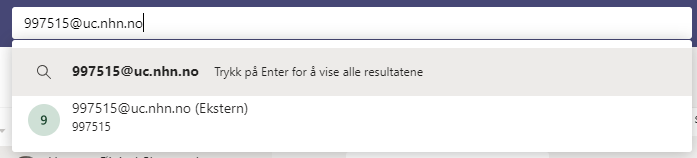
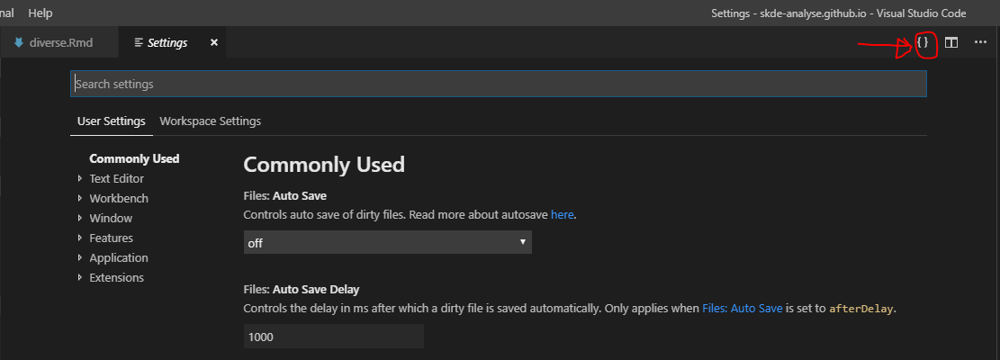
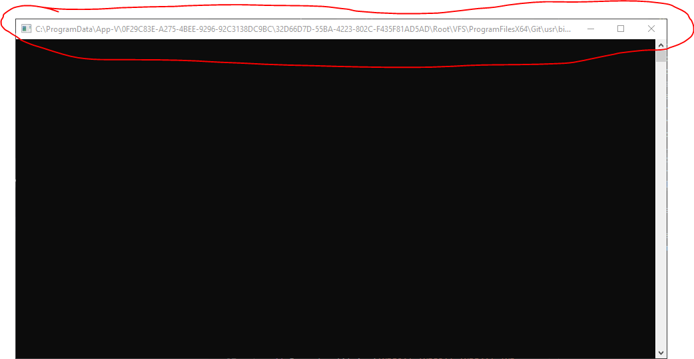

1 Diverse
1.1 Koble til virtuelt møterom
SKDE disponerer fire virtuelle møterom:
| Rom | Adresse | Alias | Nummer | Web |
|---|---|---|---|---|
| SKDE | 999363@uc.nhn.no | skde@vm.nhn.no | 999363 | https://join.nhn.no/webapp/conference/999363 |
| SKDE Analyse | 997297@uc.nhn.no | skde.analyse@vm.nhn.no | 997297 | https://join.nhn.no/webapp/conference/997297 |
| SKDE Forskning | 997298@uc.nhn.no | skde.forskning@vm.nhn.no | 997298 | https://join.nhn.no/webapp/conference/997298 |
| SKDE Servicemiljøet | 997515@uc.nhn.no | 997515 | https://join.nhn.no/webapp/conference/997515 |
Disse kan ringes opp på følgende måter, med Servicemiljøet som eksempel:
- Skype for Business: ring 997515@uc.nhn.no
- Teams: Søk på 997515@uc.nhn.no i søkefeltet og ring opp. Ikke mulig å dele skjerm/presentasjon hvis man bruker Teams. Må da heller koble seg på gjennom nettleser (se punkt under).
- Per telefon: ring 77602100, slå inn konferanse-ID 997515 og avslutt med #
- For deltagere utenfor helsenettet eller uten Skype for Business: gå til siden https://join.nhn.no/, tast inn navnet ditt, og ring nummer 997515. Eventuelt gå direkte til https://join.nhn.no/webapp/conference/997515
- Denne løsningen kan fungere dårlig med Internet Explorer. Prøv eventuelt Chrome, Safari eller Firefox.
- Løsningen fungerer ikke bak brannmuren til Helse Nord.
- Videokonferanse over helsenettet: ring 997515
1.2 Teams
1.2.1 Piping
Hvis man opplever kraftig piping når man ringer med Teams skyldes det som regel at Skype også kjører i bakgrunnen. Denne kan slås av i Oppgavebehandling.
Trykk ctrl-alt-delete og velg Oppgavebehandling. Finn Skype for Business her og drep denne prosessen. Det kan være den ligger under Flere detaljer.
1.2.2 Koble seg til virtuelt møterom
Søk etter det virtuelle møterommet og velg video/telefon:

1.3 Koble til nettverksstasjoner
For å koble til nettverksstasjon i Windows 7 gjør man følgende:
- Velg
Verktøy/Koble til nettverksstajon...i utforskeren - Legg inn stasjon i Feltet Mappe
- Velg Koble til på nytt ved pålogging
1.4 Mobilt kontor – programvare og tillegg
Ved bestilling av PC med Mobilt kontor må ønsket programvare og eventuelle tillegg bestilles. På PC’er med mobilt kontor må man bruke adgangskortet og en pin-kode.
Følgende begrensninger gjelder for PC’er med mobilt kontor:
- Det er ikke mulig å logge på maskin uten kortet. Glemmer du kortet, må du enten kjøre/sykle hjem og hente det, eventuelt få utstedt ett nytt.
- Det er ikke mulig å opprette en lokal bruker. Uten nett kan du fortsatt bruke maskinen som om den ikke var på nett, med lokale dokumenter og programvare.
Ønsket programvare og tillegg bestilles ved bestilling av PC med mobilt kontor (lista bygges ut over tid):
- SAS
- SAS Enterprise guide
- SAS base
- Add-ins for Excel
- Stata
- SPSS
- EndNote
- Add-ins for Word
- Chrome
- Firefox
- Notepad++
- Visual Studio Code
- 7Zip
- Eduroam (hvis tilknyttet UiT)
- installasjonsfil, se https://uit.no/om/orakelet/frag?p_document_id=319282
- git
- R
- RStudio
- Rtools
- Python 3
- MiKTeX
- .NET Core Runtime
Kontakt HelpDesk (07022) for å bestille nye program/tillegg og fyll inn på lista over.
1.5 Google Chrome
I forbindelse med at Google Chrome blir standard nettleser i Helse Nord blir alle utvidelser i utgangspunktet svartelistet. Det er mulig å melde ønske om hvitelisting av utvidelser
Følgende utvidelser er hvitelistet:
- uBlock, alternativ til reklameblokkeringen Adblock Plus.
- LastPass
1.6 Visual Studio Code
1.6.1 Settings-fil
Man åpner settings.json ved å gå inn på File/Preferences/Settings/ og trykke på {}-symbol oppe til høyre hjørne (se figur).

Husk komma etter hver linje på samme nivå, bortsett fra siste linje på gitt nivå. Eksempel:
{
"[SAS]": {
"files.encoding": "windows1252"
},
"files.autoGuessEncoding": true,
"telemetry.enableTelemetry": false
}1.6.2 File encoding
For å slå på automatisk detektering av tegnsett i filene, gå inn på File/Preferences/Settings/ og søk etter encoding. Huk av på Files: Auto Guess Encoding.
SAS-filer må ha tegnsett windows1252. For å tvinge vscode til å åpne SAS-filer med dette tegnsettet kan følgende snutt legges inn i settings.json:
"[SAS]": {
"files.encoding": "windows1252"
}Språkidentifikatoren SAS er definert av tillegget SAS-Syntax av 77qingliu. Det betyr at dette tillegget må være installert før denne instillingen vil fungere. Hvis et annet SAS-tillegg er installert, vil denne språkidentifikasjonen sannsynligvis være sas (med små bokstaver).
1.6.3 Git for source control
If Git was installed before VScode, then VScode should automatically pick up Git as a source control.
If VScode was installed before Git, then one can modify the settings to point to Git.
Go to settings.json as above for 'File Encoding', add:
"git.enabled": true,
"git.path":"C:\users\<user name>\AppData\Local\Programs\Git\bin\git.exe"På noen Windows10-maskiner er ikke git installert slik at vscode kan se git. Da kan man legge inn noe ala dette i settings.json:
"git.enabled": true,
"git.path": "c:\\ProgramData\\App-V\\0F29C83E-A275-4BEE-9296-92C3138DC9BC\\32D66D7D-55BA-4223-802C-F435F81AD5AD\\Root\\VFS\\ProgramFilesX64\\Git\\mingw64\\bin\\git.exe",
"terminal.integrated.shell.windows": "c:\\ProgramData\\App-V\\0F29C83E-A275-4BEE-9296-92C3138DC9BC\\32D66D7D-55BA-4223-802C-F435F81AD5AD\\Root\\VFS\\ProgramFilesX64\\Git\\usr\\bin\\bash.exe",
"terminal.integrated.env.windows": {
"PATH": "/c/ProgramData/App-V/0F29C83E-A275-4BEE-9296-92C3138DC9BC/32D66D7D-55BA-4223-802C-F435F81AD5AD/Root/VFS/ProgramFilesX64/Git/mingw64/bin/"
},
"terminal.integrated.shellArgs.windows": ["-l"],Adressen 0F29C83E-A275-4BEE-9296-92C3138DC9BC\\32D66D7D-55BA-4223-802C-F435F81AD5AD kan sees hvis man åpner git bash og ser på vinduet som åpnes smatidig. Der vil denne adressen stå (se figur).

1.6.4 Triks og tips
- Hold inne
Shift-Ctrl-Altog piltast ned/opp for å få markør på flere linjer samtidig (eventueltShift-Altog venstre museknapp).Escfor å komme seg ut igjen. Kan så trykke Home eller End for å få alle markørene helt først eller helt sist på linjene. - Ctrl-piltast for å hoppe ett og ett ord til siden (kan brukes sammen med trikset over).
- Shift+Alt+høyreknapp mus for å markere rektangulært område. Obs: Windows kan velge å bytte til annet tastaturoppsett når man trykker Shift+Alt.
1.6.5 Extensions
Når man åpner en type fil i VScode, vil en få forslag til utvidelser som kan installeres. Denne listen som kommer opp kan være lang, så her er en listen over utvidelser jeg har installert:
Excel Viewerav GrapeCityLaTeX Workshopav James YuPythonav MicrosoftRav Yuki Ueda. Denne oppdateres dessverre ikke lenger, men har ikke funnet et fullverdig alternativ enda.SAS-Syntaxav 77qingliu
1.6.6 LaTeX
VScode kan brukes som tekstprogram for LaTeX, inkludert automatisk kompilering av dokumentet tilsvarende Overleaf.
- Installer MikTeX eller lignende på maskinen.
- Installer pakkene
latexmkogmiktex-biber-bin-x64gjennom MikTeX package manager. - Installer vscode-utvidelsen LaTeX Workshop
- Hvis dokumentet må kompileres med lualatex og biber, noe som gjelder de fleste av våre rapporter og notater, legges følgende inn helt først i dokumentet:
%! TEX program = lualatex
%! BIB program = biberHver gang en fil lagres i prosjektet, vil dokumentet kompileres. Åpne pdf-filen i VScode ved å trykke på tegnet med liten rød strek og forstørrelsesglass oppe til høyre i en tex-fil.
1.7 Atom text editor
1.7.1 Diverse oppsett
Gå inn på Settings (ctrl-,):
- Velg
Core-File encodingogWestern (Windows 1252)for å unngå at Atom alltid åpner filene iutf-8. - Velg
install, søk etter, og installer, følgende pakker: language-sasfor å få SAS syntax.file-watcherfor at Atom skal oppdatere filer som lagres av andre.block-selectfor å kunne markere flere linjer
1.7.2 Annet
- Bruk
ctrl-shift-mfor å vise hvordan en markdown-side vil se ut. - Hold inne
Alt-tast og venstre museknapp for å velge flere linjer og blokk med tekst.block-select-pakken må være installert for at dette skal fungere.